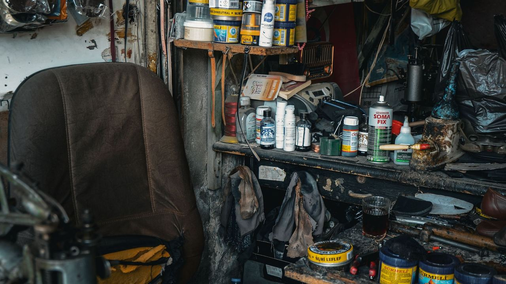
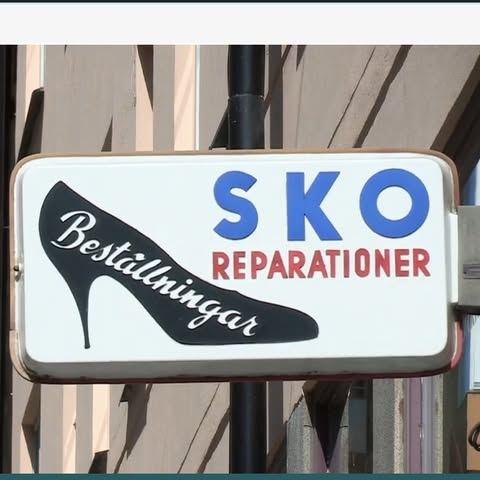
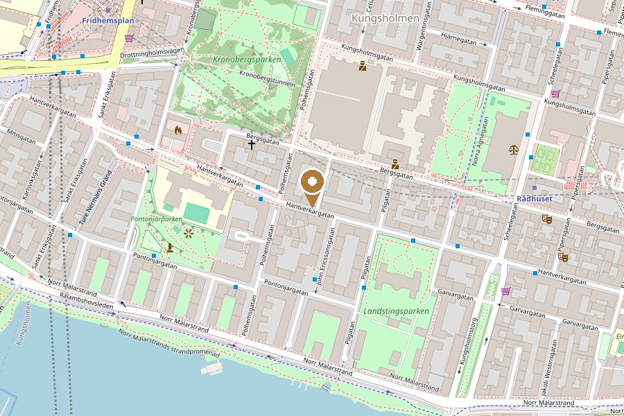

Skomakeri & nyckelservice · Kungsholmen
Anderssons Skomakeri
Reparationer av skor och kängor, klackar, sulor och nycklar – hantverk på Hantverkargatan 50.
Ring oss★★★★★ 4,9 av 5 · 110+ omdömen på Google
Ge skorna ett längre liv
Älsklingskängorna, festskorna med trasig klack eller boots som behöver nya sulor – vi reparerar med kunskap och omsorg, ofta snabbt. Vi gör även nycklar.

Vad vi gör
Skor
Klackar & sulor
Byte och lagning.
Kängor & boots
Omsulning och reparation.
Läder
Lagning
Sömmar och slitage.
Skovård
Rengöring och puts.
Service
Nycklar
Nyckelkopiering.
Snabba ärenden
Fråga – ofta samma dag.
Kom in med skorna så ger vi en bedömning och prisuppgift.
Öppettider
| Måndag – fredag | 09:00 – 18:00 |
| Lördag – söndag | Stängt |
Hantverkargatan 50, 112 31 Stockholm
Kungsholmen · nära Fridhemsplan
073-560 50 78
anderssonsskomakeri@gmail.com
